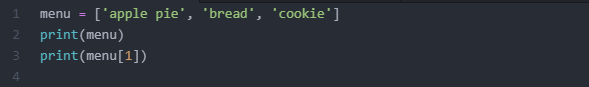
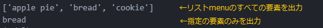
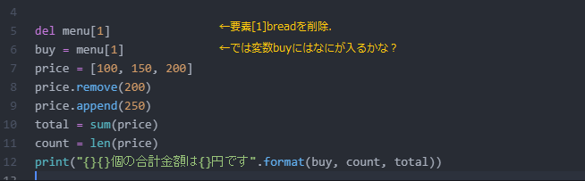
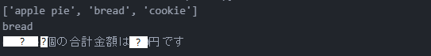

これまでは変数を利用し、変数に数値や文字列を代入したプログラムを書いてきました。
変数だけ使ってプログラムを書くことはできますが、扱うデータ件数が増えたときには変数を追加する必要がありますし、全データを合計するといった処理をおこないたいときにもコードが長く複雑なものになってしまいます。
そこで、ほとんどのプログラミング言語では「関連するデータをグループにして、まとめて1つの変数として扱えるしくみ」が用意されています。
このような仕組みをデータ構造(data
structure)といい、Pythonではコレクション（またはコンテナ）といいます。
コレクション（コンテナ）にはいくつか種類があり、代表的なものとして「リスト」「ディクショナリ」「タプル」などがあります。
リストとは、複数の値を1列に並べて管理するためのコレクションです。1つの変数につき1つの数値あるいは文字列しか扱えないのに対して、一度に多くのデータを整理して扱えるメリットがあります。
リストは[大かっこ]の中にカンマで区切られた要素で構成されます。
|
#リストの基本書式 |
先頭から順にインデックス（index）とよばれる番号（添え字）が割り振られています。pythonでは先頭のインデックスは0となります（1から数える言語もあります）。
まずはリストを作成しながら、いろんな操作を試してみましょう。
リストに要素を追加して、その結果を出力してみましょう。要素の区切りにカンマ（,）を入れます。
文字列はダブルかシングルクォーテーションで挟みます。
▲リストmenuに要素を代入したあとで出力してみましょう。

▼実行結果

先ほどのプログラム分に以下のプログラムを書き加えていきます。
5行目：リストmenuの要素[1]を削除します。breadが削除され、[0]apple
pie,[1]cokkieとなります。
6行目：更新されたリストmenu[1]を変数buyに代入。
7行目：リストpriceは数値データを格納。
8行目：removeメソッドは対象となるリストを指定し、要素を削除します。
9行目：appendメソッドは対象となるリストを指定し、要素を追加します。
10行目：sum関数はリストの合計を返します。
11行目：len関数はリストに含まれる要素数を返します。
12行目：format関数は文字列の中に値を埋め込むための関数です。文字列に変数を埋め込みたいときにformat関数を使うとすっきり記述できます。
【書式】"文字列{
波かっこ1 }{ 波かっこ2}{ 波かっこ3}".format(値1,値2,値3)
文字列の中に値を埋め込みたいところに｛｝を書きます（複数可）。.format後のかっこに埋め込みたい値を(値1,値2,値3・・・)のようにカンマで区切って並べます。

▼実行結果 さて？部分には何が出力されるでしょうか。実際に書いて確かめてみましょう。
